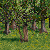
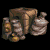
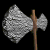
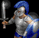
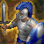

RM Brawl 1.25 Patch Notes
All civilizations get unique technologes.
Reverting some economy changes, game starts were too monotone.
Multiple reverts and changes to match the new AOE:DE patch 46777.
Change-logs have been updated to match patch 1.25
Check this to see what all has changed since AOE Rise of Rome 1.0a
Check this to see what all has changed since UPatch 1.1 R4
Check this to see what all has changed since AOE:DE
Economy and Map Changes
Straggler trees
Wood amount 75 -> 80
Hill Country & Highland
World berries 8+(1 per map size) -> 5+(1 per map size)
Gazelles
Food decay rate 0.2 -> 0.25
Granary
Wood cost 110 -> 120
Government Center
Stone cost 250 -> 0
Linen Cloth
Villager Hit points +10 -> +5
Zealotry
Villager Hit points +25 -> +30
Military Changes
Battle Axe
Research time 70s -> 40s
Long Sword (upgrade)
Food cost 160 -> 240
Gold cost 50 -> 100
Legion
Hit points 160 -> 140
Legion (upgrade)
Food cost 700 -> 1400
Gold cost 300 -> 600
Elephant Archer
Gold cost 100 -> 60
Ballista
Pierce damage 30 -> 40
Reload time 3.1 -> 2.7
Requirement Bronze Age -> Iron Age
Pierce armor 1 -> 0
Helepolis
Pierce damage 40 -> 45
Pierce armor 1 -> 0
Helepolis (upgrade)
Food cost 1500 -> 1200
Recurve Bowman
Attack base melee 6 -> 5
Reload time 1.4 -> 1.12 (+25% attack speed)
Heavy Sling (upgrade)
Food cost 350 -> 500
Gold cost 180 -> 300
Aristocracy
Academy units bonus movement speed +25% -> +20%
Catapult Trireme & Juggernaught
Attack buildings 40 -> 35
Improved Slinger, Heavy Slinger, Recurve Bowman
Enabled for AOE:DE
Unique Technologies
 Unique Technology
Unique Technology
All civilizations will have one unique technology in Bronze Age.
Researched from Government Center, 60s research time, cost varies.
Assyrian - Arson
Cost 180 Wood, 120 Gold
Effect Melee units deal +3 damage to buildings
Babylonian - Plain Bearing
Cost 150 Food, 80 Gold
Effect All chariot units move 15% faster
Carthaginian - Panoply
Cost 120 Food, 60 Gold
Effect All Academy units +30% HP
Choson - Fletching
Cost 120 Food, 60 Gold
Effect All Archers +1 range
Egyptian - Dipylon Shield
Cost 75 Food, 50 Gold
Effect Hoplites attack 20% faster
Greek - Levies
Cost 80 Food, 30 Gold
Effect Swordsmen and bowmen cost wood instead of gold
Hittite - Mahawi
Cost 125 Food, 75 Gold
Effect Camel Riders attack 20% faster
Macedonian - Dry Dock
Cost 150 Food, 120 Wood
Effect War ships +1 attack
Minoan - Machicolation
Cost 250 Food, 180 Stone
Effect Towers +2 attack
Nubia / Berbers - Smelting
Cost 120 Food, 80 Gold
Effect Swordsmen and Legions +1 attack
Palmyra - Vamplate
Cost 180 Food, 100 Gold
Effect Academy units +1 slash armor
Parthia - Linothorax
Cost 120 Food, 75 Gold
Effect All Barrack units +1 slash armor
Persian - Lead Bolts
Cost 120 Food, 50 Gold
Effect Slingers +1 damage
Phoenician - Padded Armor
Cost 125 Food, 90 Gold
Effect All barrack units +1 pierce armor
Roman - Bodkin
Cost 250 Food, 140 Gold
Effect All bowmen ignore unit armor
Scythia - Tusk Swords
Cost 250 Food, 160 Gold
Effect All elephants +20% HP
Shang - Husbandry
Cost 80 Food, 50 Gold
Effect Stables work 33% faster
Sumerian - Phajaan
Cost 140 Food, 75 Gold
Effect Stable units +1 attack
Thrace - Lamellar
Cost 160 Food, 80 Gold
Effect Archers take 1/2 population
Yamato - Chemistry
Cost 100 Food, 75 Gold
Effect Stone Throwers +10 damage
Civilization Changes
Assyrian
Bonus removed Fire galleys deal blast damage
Bonus removed Villagers move 10% faster
New bonus Foragers work 5% faster
Technology enabled Alchemy
Babylonian
Technologies disabled Iron Shield Tower shield, Heavy Slinger
Technology enabled Chain Mail
Choson
Bonus Long Swordsmen and Legions +40/60 HP -> +60/80HP
Egyptian
Technology enabled Catapult
Greek
Bonus removed All Government Center upgrades available at Bronze Age
Bonus Foot soldiers and siege workshop units move 10/20/30% faster at Tool/Bronze/Iron Age -> 5/10/20% faster at Tool/Bronze/Iron Age
New bonus All cavalry units +10% HP
Technologies enabled Improved Bowman, Metallurgy
Macedonian
Bonus removed Docks work 33% faster
Minoan
Bonus removed Land ranged units are trained 33% faster
Bonus Farms cost -15% -> Farms have +60 food
New bonus All bowmen cost -15%
New bonus Camel Riders +10% HP
Nubia -> Berbers
Bonus Gets +100 food on age up -> +75 food on age up
Palmyra
New bonus Scouts move 15% faster
Parthia
Technologies disabled Phalanx, Centurion
Technology enabled Long Sword
Shang
Technology enabled Ballistics
Sumerian
Bonus removed Villagers benefit from armor upgrades
New bonus Villagers get +10 HP on age up
Thrace
Technologies disabled Ballistics, Ballista tower
Yamato
Bonus removed Villagers move 10% faster
New bonus Granary technologies cost -70%
New bonus Towers fire 20% faster